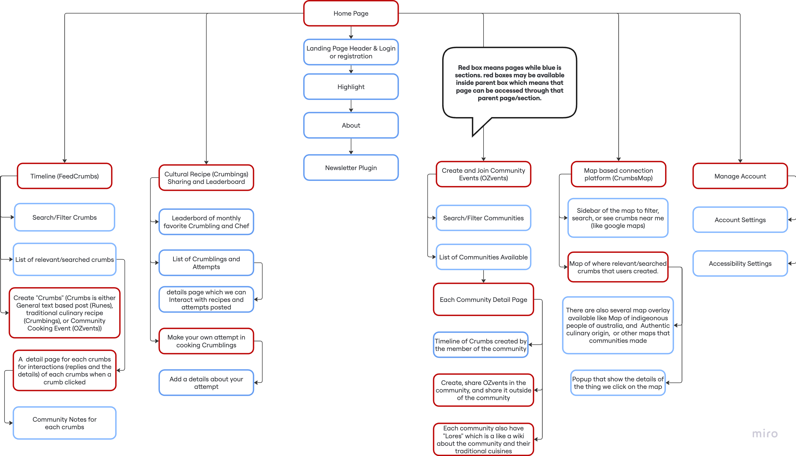

Sitemap for the "FeedCrumbs" project
This is my annotation for my website sitemap implementation. This section is to show how the sitemap relates to the client goals and user needs. Each annotations also includes the describe the purpose, features, functionality, and accessibility considerations of each page.
"Community Representation" and "Create Meaningful Connections" value that have
been established is designed to so that
people can express, share, and connect with others in their community.
Based on the needs derived from the values and user stories, users need a "way"
to express their community identity and cultural background. In addition, the
needs of "connecting with others"
through communities, contents, and events, are also important to be fulfilled.
This Crumbs feature is exists to cover those values and needs.
Crumbs is like a tweet in Twitter, or a post in Facebook, but in this case, it
is a way for people to represent their community and connect with others by
sharing general text-based posts, community events, and traditional cuisines
recipes.
text-based posts are called Runes, community events are called OZvents
(pronounced "Ozzeevents"), and traditional cuisine recipes are called
(Crumbings).
Since the potential users needs ease of use and accesible applications, The
Crumbs page is designed to be user-friendly and accessible to all users,
thorugh beginner friendly guides and accessibility considerations. For first
time users, a
step by step guideline/tutorial will be shown to help them understand how to
navigate and utilize this page.
In details, crumbs can be three types a general text-based post like
Reddit/Twitter, a Community Event Promotion, or a Traditional Cuisine Recipe
Post.
The top part of the crubms page is a search and filter feature.
This feature is created to make it easier for user to find relevant
crumbs
based on their preferences.
As the search bar is actually a form input and to adhere to WCAG 3.3.2
(Labels and Instructions), Labels and Instructions regarding what
is required to fill will be made visible to the users.
In order to create crumbs, user can click the floating action button
in the bottom right of the screen. This button will popup a modal with
different forms
based on what we what type of crumbs the user want to create. User can
also
opt to geolocate the crumbs, so that it will shows on the CrumbsMap
Page.
Similiar to search bar, this form input and to adhere to WCAG 3.3.2
(Labels and Instructions), Labels and Instructions regarding what
is required to fill will be made visible to the users.
Also, error identification and suggestions will also be implemented when
filling the different form fields to adhere to WCAG 3.3.1 (Error
Identification)
To mitigate the risk of unathorized personal data collection, appropiate
popup to confirm the user whether to share their location will be
provided,
so that every post that are geolocated will always be consented by the
user.
The list of crumbs (FeedCrumbs) is the main content of this Crumbs. It
shows the
list of relevant crumbs based on the user's search and filter
preferences.
Each crumbs will show the author, a "tag" that showing their community
representation, and profile image, main title of the crumb, and the
content (in short) of the crumb.
In order to mitigate an ethical risk of cultural misunderstanding, each
crumbs will also
be supported with Community Note (like X), so that each user can give
a context if something is unclear or misunderstood (ACS Code 2: The
Enhancement of Quality of Life).
As described in FeedCrumbs, each crumb may have commnunity notes if necessary. Everyone can add community notes, but to improve the quality of community notes, each time a Crumb is flagged as "need to check" by the system, the community representative will be the first to be notified to add a community note.
As each crumbs is different, and may have differet types of content,
users
can see the detail of each crumbs by tap on each of crumbs. Users can
interact such as like, comment, share, and save each crumbs.
for Crumbings (traditional cuisine recipe posts), users can also
rate and "compete" to cook the recipe by sharing their own version of
the recipe, and will be judged by the number of likes and comments. This
leaderboard feature
will be made in the the Crumbings Leaderboard page.
for OZvents (community event promotion posts), users can but the ticket
for the event, or share the event to others.
for Runes (general text-based posts), users can like, comment, and
replies,
and share the post to others, similiar to reddit.
Community in "Community Representation" is not only about the people, but also
the places that hold them. Historically important cultural sites, areas, and
landmarks are very imporant to be preserved and known by the people in Austrlia.
"Accessible Resource" is one value that we have not established. A curated,
location based
information platform that is informative and educational will be very useful to
fulfill the needs of a intuitive
and easy platform to learn about diverse communities in Australia, especially
for people who may
have not have a general idea of the diverse communities in Australia.
Additionally, Community and
Self identity representation can also be expressed by a concrete location that
holds value for the
people and the community.
The CrumbsMap is created in order to stand on this foundations. Users will be
able to see geotagged crumbs in a map interface to explore and learn the
location based informations about cultural
sites, areas, landmarks, and other relevant places that holds value to the
communities in Australia. The map will be equipped with interactive Sidebar
(similiar to Google Maps), the geolocated crumbs, informative overlay layers,
and also the details of each
crumbs. Therefore, users can connect with the communities and people through a
geolocated Rune, OZvent, or Crumbings
This feature purpose purpose is to make users can filter, search and
also navigate. This sidebar also used to control the map, such as
changing
basemaps, overalys, etc. Example of the usage of this sidebar is to look
for
OZvents near me, so that I can join and learn Cultural Community Events.
Since there are inputs in this sidebar, we will adhere to WCAG 3.3.2
(Labels and Instructions), Labels and Instructions regarding what
is required to fill will be made visible to the users. And also we will
have to adhere to
WCAG 1.4.3 (Contrast minimum) since the map can be vary in color, we
will have to make sure the
sidebar is always have a contrast with the map.
This is the main content of this page, the actual map interface. There
are
three types of layers, the basemap (like Google Sattelite or
OpenStreetMap) for
the base layer, the overlay layers (like Indigenous lands, historical
sites,
culinary origins, etc) and finally the geolocated crumbs generated by
the users.
Similiar to the sidebar, we will have to adhere to WCAG 1.4.3 (Contrast
minimum) since the map can be vary in color, we
will have to make sure the map is contrast with the rest of the contents
on this page.
This feature is used to represent cultural locations/regions on an
interactive map. Users can explore and learn based on the overlay
layers.
By default Indigenous lands, historical sites, culinary origins overlays
will be
made available
to be toggled on and off, so the users can spesifically see what they
want to learn and explore. Other relevant overlays layers may be added
in the future
based on the user feedbacks and needed.
For ethical considerations, the overlays will be made and curated along
with community
representatives to make sure the information is accurate and respectful.
In addition, similar to
Community notes in Crumbs, every overlay layers will always has a link
to a community note section so That
people can recheck and validate if any information is not accurate (ACS
Code 2: The
Enhancement of Quality of Life).
This feature has the same hierarchy and functionality as the the
overlays layers,
but instead of precreated information, this layer actually sourced from
the crumbs
generated by users. This feature is mainly a clickable pins in the map
for each of the crumbs
that the user query. This feature is clickable and when clicked will
open the details of the crumbs,
which will be explored below.
Similiar to the sidebar, we will have to adhere to WCAG 1.4.3 (Contrast
minimum) since the map can be vary in color, we
will have to make sure the pins is contrast with the map.
Also for ethical considerations, similiar to a normal crumbs, the
details of each pin
wil be equipped with community notes, mainly by the community
representatives, to prevent misuse such
as marking sensitive area with inappropriate crumbs.
This feature purpose is to visualize the contents of each crumbs, as
Described by how crumbs created,
it will contain all the contents of the crumbs. The example use of this
is when a user click a crumb for a
with the type of Crumbings, then a recipe, particpants who cooked the
recipe, comments, origin story of the crumbings, etc will be shown
in the details.
Specific to the official cureated overlay layers, the details of each
region/sites will
have to adhere to to reading level of Grade 8 or lower (WCAG
3.1.5 (Reading Level)), in order to make sure that users with limited
knowledge especially in english can still understand the contents.
Same as above, for ethical considerations, community notes will be
available if necessary to
mitigate the risk of any potential innapropriate contents.